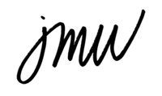
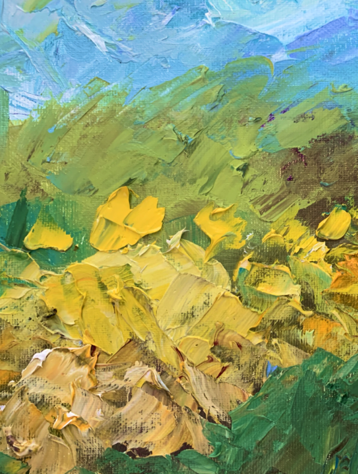
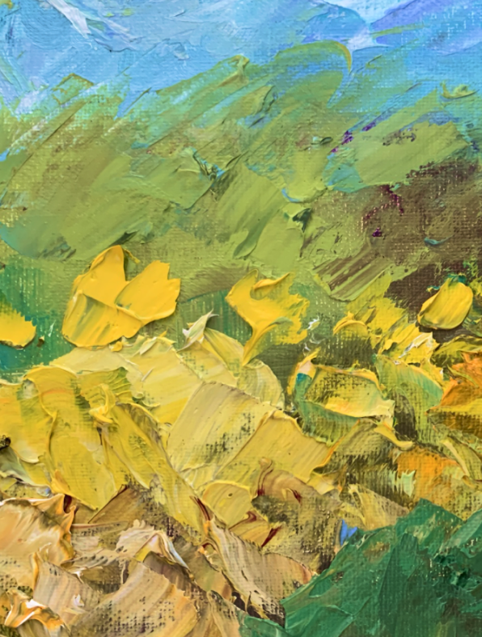
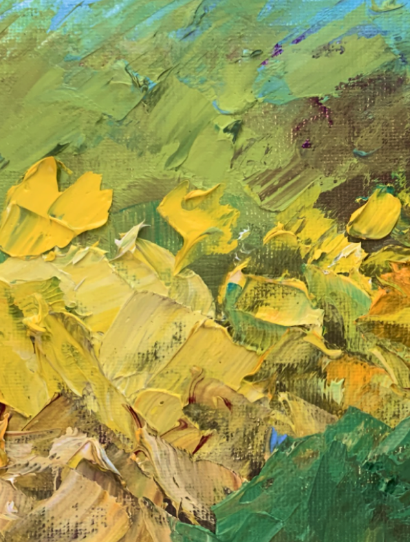

Jessica Muñiz Witmer
Hello!
Nice to meet you!


Jessica Muñiz Witmer
Nice to meet you!

Jessica Muñiz Witmer
About Me

Jessica Muñiz Witmer
Designer
Experience
Project Overview
Plantarion
Mission
Plantarion is for the vegan community to connect high-quality plant-based providers (such as chefs, fitness instructors and nutritionists) with individuals seeking plant-based services such as catering, healthy-living consulting and vegan living guidance.
Project Overview
Plantarion
Human problem being solved
- Individuals new to the vegan lifestyle find it hard to get started and maintain diets
- Plant-based providers lack platforms where they are presented in a professional manner
- Vegan resources are located in many different experiences without cohesion
Project Overview
Plantarion
Business opportunity
- Leverage healthy-living market growth
- Current market offerings are disjointed
- Gig economy flourishing
Project Overview
Plantarion
Outcomes
“It’s like a one-stop shop for vegan food services and education!”
— Danni McGhee, Plant-Based Nutrition Coach
- New Venture Competition finalist, George Washington University Office of Innovation and Entrepreneurship
- iOS and Android MVP app released
- Iterative refinements based on use
- Investor interest and support of continued development
Project Overview
Talent Network
Mission
Seamlessly connect Washington Post editors with top quality vetted freelancers. A platform for freelancers to accept assignments with timely payments, and to pitch stories directly to the newsroom.
Project Overview
Talent Network
Human problem being solved
Open up the newsroom to more ideas for news coverage from across the world, and more easily locate the best freelance talent when breaking news occurs outside Washington.
Project Overview
Talent Network
Business opportunity
- Leverage the gig economy to scale news article delivery
- Expand reach and response time to grow brand awareness and engagement
- Streamline workflows through a digital-first application
Project Overview
Talent Network
The project
- 2014 Concept development, architecture, and workflows established. MVP launch.
- 2015 Onboarding, assignment delivery, and payments. Iterative refinements based on end-user needs.
Project Overview
Talent Network
Outcomes
- Onboarded over 3,000 freelancers and delivered over 3,500 assignments, including several viral stories
- 1,000+ pitches have been considered
- Aligned the payment system to a digital-first workflow
- Grew the platform to include photographers, videographers, translators, illustrators, and more
- Noted by Jeff Bezos as one of the surprising successes to double down on